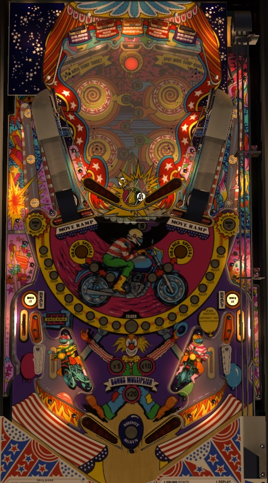

Complete 3-banks of drop targets lowers the ramp, enabling access to the upper playfield. On the upper playfield, free points are given each second; your time on the upper playfield ends after 20 seconds or when the ball drains. Hit lit targets on the upper playfield to increase the free per-second score. Lit red upper playfield targets advance toward Red Special at the back of the lower playfield; completing 3 drop target banks lights the Orange Special at the upper playfield. Orbit shots advance bonus multiplier. Note the React! feature in both out lanes; clear a drop target bank to relight it.
Each drop target down in either bank scores 5,000 points and a bonus advance. The targets in the 3-banks at the top of the main playfield also score 5,000 and a bonus advance; when lit, these targets spot one of the drop targets on the same side of the table. Pop bumpers rotate which standup target is lit. Completing a bank of standup targets lowers the ramp on that side of the playfield for 10 seconds, advances one step toward Orange Special, and relights the out lanes for React! if they were not already lit.
A trip to the upper playfield lasts 20 seconds or until the ball drains through the hole between the flippers. While on the upper playfield, the motorcycle rider on the backglass will spin around his loopdeloop about once per second. Each time he does, the highest currently lit value on the edge is scored. The value starts at 0 points, but hitting any upper playfield standup target increases the autoscore value to 3,000, then 5,000, 8,000, 10,000, 13,000, 15,000, 18,000, and finally 20,000. When the ball leaves the upper playfield, the cyclist stops moving and the autoscore value unlights; it must be built back up again the next time you reach the upper playfield.
There are 5 upper playfield standup targets, in the pattern blue-red-orange-red-blue from left to right. The two left targets are only lit if the left drop targets have been completed. The two right targets are only lit if the right drop targets have been completed. The center orange target is only lit if Orange Special has been qualified by completing any bank of drop targets 3 times.
Blue targets score 5,000 points, or 20,000 when lit. Red targets score 10,000 points, and give letters in Devil Riders when lit, which progresses toward lighting the Red Special. The orange target scores 10,000 points, or the Orange Special when lit; collecting the Orange Special unlights the target. Orange Special can score a free game, an extra ball, 300,000 points, or a "superbonus", which lights the word Superbonus on the backglass and does nothing else (used in some places to signify an earned free drink, or similar).
Hitting a lit red standup target on the upper playfield awards, 1, 2, 3, or 4 letters in Devil Riders, depending on game settings. Spelling Devil Riders lights the back center standup target on the main playfield for a Red Special, which can score a free game, an extra ball, 1,000,000 points, or a superbonus. The red special target scores 10,000 points when not lit. Collecting the Red Special resets all Devil Riders letters.
Each orbit shot has 3 rollover buttons. Lit buttons score 5,000 points, and unlight when pressed; unlit buttons score 500 points. Unlight all 3 buttons in a single orbit to relight them; this counts as one "completion". Every second completion of the rollover buttons on a given orbit advances the bonus multiplier in the sequence 5x-10x-20x. Each orbit keeps track of the number of completions separately. Orbit shots feed the ball to the bumper area. It is possible for a fast moving ball to skirt around a rollover button and not press it.
Pop bumpers score 1,000 points when lit, or 100 when not lit. Exactly two bumpers are lit at any time, and they are always opposite each other in the square pop bumper nest. Slingshots alternate which pair of bumpers is lit.
The in lanes and out lanes are in their usual order, but notice that part of the in/out lane dividing rail is a literal entire flipper. When an out lane is lit, React! is ready, meaning you get one chance at a well timed flip on that side where the flipper will flip outwards and fling the ball back up the out lane. Doing this unlights said out lane. Both out lanes can be relit by completing any bank of drop targets. Out lanes score 10,000 points and a bonus advance. In lanes score 500 points and a bonus advance.
Base bonus is advanced by any rollover lane, drop target, or standup target. Each bonus advance adds 2,000 points to the base bonus instead of the typical 1,000. Every second completion of the rollover buttons in one of the orbits advances the bonus multiplier in the sequence 5x-10x-20x. Max bonus is 20x 38,000 = 760,000 points. There is no mid-ball bonus collect and there is no way to carry over any base bonus or multiplier.
On the final ball of the game (e.g. ball 3 of a 3-ball game), the ball in play display will read "Game Time Bonus Up: 10" as soon as the ball enters the playfield. During this final ball, every 3rd switch hit anywhere on the playfield adds 1 to the Game Time Bonus. Immediately after this final normal ball drains, the Game Time Bonus begins. Game Time Bonus is a timed bonus ball with unlimited ball save for as long as there is time on the clock.
If you drain during Game Time Bonus: a new ball will be fed to the shooter lane and play continues with no penalty other than the clock continuing to run.
If you tilt during Game Time Bonus: the entire playfield will go dark and the ball will be allowed to drain, with no further points being scored. The entire end of ball bonus including multiplier will be reset without being scored. If there is still time on the clock when the ball reaches the out hole, play will continue.
When Game Time Bonus ends: the announcer will count down your final 10 seconds on the clock. When the clock hits 0, all playfield lights go dark and the ball is allowed to drain, with no further points being scored. After the ball reaches the out hole, your end of ball bonus is scored, and the game either enters Game Over mode or transitions to the next player, who will play their final normal ball immediately followed by their Game Time Bonus ball.
If you collect an extra ball during Game Time Bonus: the clock immediately stops, and the previous rule of "every 3rd switch adds 1 to the clock" applies. When the ball drains and the extra ball is used, the Game Time Bonus ball will continue.
Remember that all players play their Game Time Bonus ball immediately after their final standard turn, and that the Game Time Bonus clock continues to run while the ball is in the shooter lane waiting to be plunged. Note as well that "seconds" of Game Time Bonus may not be equivalent to real-life seconds.
The maximum number of extra balls that a player can accumulate at any given time can be set to 1 or 3.